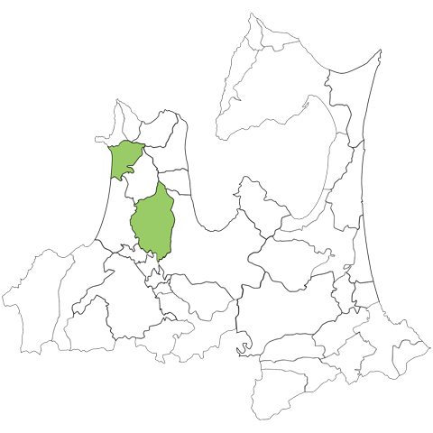

自己紹介(Self-introduction)
名前（Name）
古川拓弥（こがわたくや）
出身地（Birthplace）
青森県五所川原市出身

趣味（Hobby）
趣味はウォーキング
コースは特に決まっていない
今までの歩数記録の最大値は１万２千歩
特技（Special skil）
特技は2つ
1つ目は野球
ポジションは小学生の時は外野手、中学生の時は外野手と一塁手、投手
2つ目はテニス
ボレーは苦手だがラリーは得意である
座右の銘（Motto）
「初心忘るべからず」英語:Don't forget your first thoughts
「初心忘るべからず」を座右の銘にし経緯は、中学生の時の数学の授業でその当時の教師から聞いて心に響いたことがきっかけ
また自分が行き詰ったときによく自分の心に言い聞かせている
「初心忘るべからず」の意味は物事を始めたばかりの頃の、真剣で謙虚な気持ちを忘れるなという意味